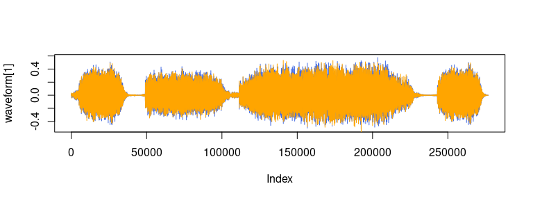
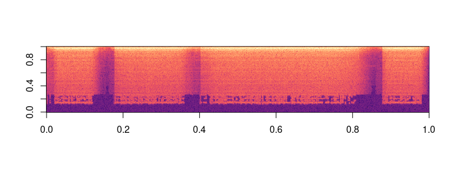

torchaudio is an extension for torch providing audio loading, transformations, common architectures for signal processing, pre-trained weights and access to commonly used datasets. The package is a port to R of PyTorch’s TorchAudio.
torchaudio was originally developed by Athos Damiani as part of Curso-R work. Development will continue under the roof of the mlverse organization, together with torch itself, torchvision, luz, and a number of extensions building on torch.
Installation
The CRAN release can be installed with:
install.packages("torchaudio")You can install the development version from GitHub with:
remotes::install_github("mlverse/torchaudio")A Waveform
torchaudio also supports loading sound files in the wav and mp3 format. We call waveform the resulting raw audio signal.
library(torchaudio)
url = "https://pytorch.org/tutorials/_static/img/steam-train-whistle-daniel_simon-converted-from-mp3.wav"
filename = tempfile(fileext = ".wav")
r = httr::GET(url, httr::write_disk(filename, overwrite = TRUE))
waveform_and_sample_rate = transform_to_tensor(tuneR_loader(filename))
waveform = waveform_and_sample_rate[[1]]
sample_rate = waveform_and_sample_rate[[2]]
paste("Shape of waveform: ", paste(dim(waveform), collapse = " "))
#> [1] "Shape of waveform: 2 276858"
paste("Sample rate of waveform: ", sample_rate)
#> [1] "Sample rate of waveform: 44100"
plot(waveform[1], col = "royalblue", type = "l")
lines(waveform[2], col = "orange")
A Spectrogram
specgram <- transform_spectrogram()(waveform)
paste("Shape of spectrogram: ", paste(dim(specgram), collapse = " "))
#> [1] "Shape of spectrogram: 2 201 1385"
specgram_as_array <- as.array(specgram$log2()[1]$t())
image(specgram_as_array[,ncol(specgram_as_array):1], col = viridis::viridis(n = 257, option = "magma"))
Datasets (go to issue)
- CMUARCTIC
- COMMONVOICE
- GTZAN
- LIBRISPEECH
- LIBRITTS
- LJSPEECH
- SPEECHCOMMANDS
- TEDLIUM
- VCTK
- VCTK_092
- YESNO
Models (go to issue)
- ConvTasNet
- Wav2Letter
- WaveRNN
- (what else? novel structures are very welcome!)
Code of Conduct
Please note that the torchaudio project is released with a Contributor Code of Conduct. By contributing to this project, you agree to abide by its terms.